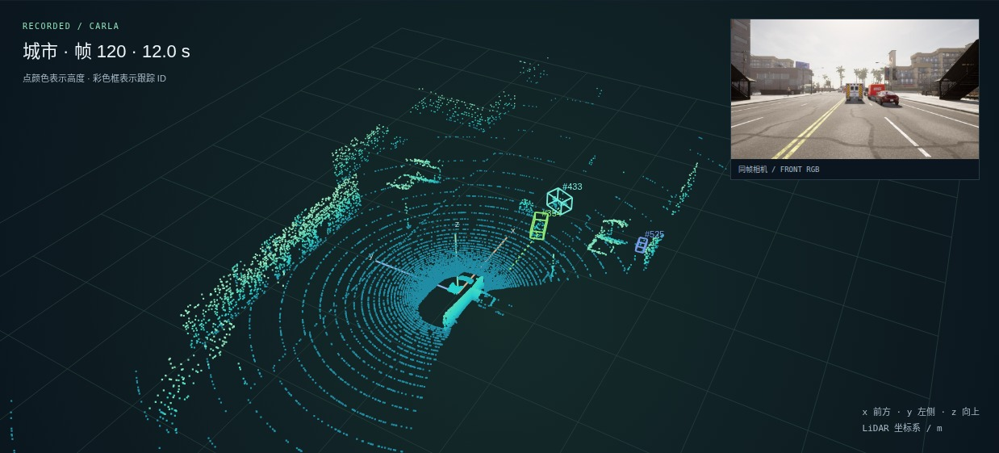

相机 × 激光雷达 · 自动驾驶感知
从传感器数据
到可执行的轨迹。
感知、跟踪、预测、路径规划与车辆控制，连接到同一套 Python + C++ 核心。查看闭环驾驶、CARLA 实际控制和可复现的评估。

转动三维点云，查看空间结构 ↗城市跟踪计算提速
C++ 批量 IoU · 固定检测输入三轮均值实录传感器帧完成评估
城市、高速各 400 帧建立轨迹预测评估
训练、验证、测试按城镇划分新增 / 路径规划与车辆控制
看见障碍，规划路径，控制车辆。
十个可复现的闭环场景。
查看实际行驶轨迹、候选路径、速度和控制指令。
车辆由 Python 规划与控制代码闭环驱动，再导出记录供浏览器回放。真值基线绕过检测；合成 LiDAR 使用表面采样点云、真实聚类检测、跟踪与预测，但没有光线遮挡模型。规划器只使用当前观测和预测；障碍真值仅用于评分与显示。灰色候选为可行、橙色为被约束拒绝，不代表最终执行。碰撞检查、场景范围与耗时定义见完整报告。
展开全部场景的验收结果
| 场景 | 真值检测基线 | 合成 LiDAR |
|---|
python tools/run_driving.py --scenario obstacle --detector gt --out
outputs/driving-obstacle-gt
CARLA / 实际闭环控制
同一套代码，接到仿真车辆上。
本项目输出转向、油门与制动。
自车未启用 CARLA autopilot。
这两次测试限定在无路口的单车道路线，记录碰撞与压线事件；没有验证城市交通全场景。转向映射针对测试车辆固定了转向比例曲线。视频时长是仿真时间，不代表计算实时性；红绿灯停车与绕障目前在上方合成闭环场景中验证。
交互 / 三维点云
换一个角度，看见场景的空间结构。
拖动旋转，滚轮缩放。
同一帧的点云、目标框与相机画面一起查看。
载入后可旋转查看。也可使用下方视频与逐帧查看器。
使用已有 42 个采样时刻，额外从对应原始记录导出最多 20,000 个点，默认显示 12,000 点。点坐标量化为 2 mm 步长，仅用于显示；颜色映射点的高度，不代表类别。框按评估区域及相机视野筛选，沿用 C++ 改动前的 0.2 m 体素 + YOLO + IMM 输出。环绕观察只移动观察视角，不推进时间。触屏拖动或键盘方向键也可旋转。
01 / 系统回放
同一段行程，两种视角。
相同颜色表示同一跟踪 ID。
在相机画面和鸟瞰图之间对照目标。

视频沿用原始点云聚类运行：120 个渲染帧、5 fps。每次评估均处理完整 400 帧传感器数据。视频播放速度不代表流水线吞吐率。
02 / 逐帧查看
把结果停下来，看清每个目标。
拖动时间轴、切换图层，
点击跟踪框或选择 ID 查看状态。
两场景均连续处理 400 帧，每 20 帧及最后一帧导出一次，共 42 个可查看时刻。每帧最多抽样 2,500 个点供显示，检测仍使用原始输入。目标框与轨迹按评估区域和前视相机视野筛选。坐标为当前 LiDAR 坐标系：x 向前、y 向左、z 向上，单位 m。速度为世界系估计速度在当前 LiDAR 轴上的表达，未减去自车速度。按帧查看速度可自行控制，不代表系统实时运行速度。视频和逐帧数据均保留 C++ 改动前的跟踪配置。
03 / 性能与质量
先定位耗时，再衡量取舍。
相同记录、检测器与跟踪器。
本组为旧版跟踪器的体素聚类对照。
在体素质心上聚类，
用原始点拟合包围框。
按体素内点数为 DBSCAN 加权，保留点数密度阈值；包围框仍由原始点拟合。体素化会近似邻域几何，因此速度和跟踪质量同时报告。
查看聚类实现 ↗这些指标分别说明什么？
Precision / Recall：输出中匹配正确的比例 / 真值被覆盖的比例。HOTA：综合检测与身份关联的质量。IDF1：全序列身份匹配 F1。MOTA：由漏检、误检、身份切换计算，可能为负。p95：95% 被计时帧的耗时不超过该值。
每场景 400 帧，每种设置运行一次；YOLOv8n 使用 RTX 5090，BLAS/OpenMP 线程数为 1。计时不含前 5 帧预热、读盘、渲染与评估。MOTA 使用 BEV IoU 0.3，IDF1 使用 0.5，HOTA 平均 19 个阈值。真值与跟踪结果使用相同 XY 范围及相机视野，包含被遮挡真值。本组体素优化后的平均耗时仍超过 100 ms。后续 C++ 跟踪结果见下方；召回率仍偏低，属于项目内部评估。
03B / C++ 跟踪加速
批量计算 IoU，跟踪均值降到约 3 ms。
固定检测输入，三轮交叉顺序对照。
仅替换计算后端时，800
帧轨迹状态一致。
将耗时的旋转框交集
交给原生批量计算。
缓存框顶点，先排除不相交的候选，再计算多边形交集。Python 保留滤波、关联与预测，评估器沿用原实现。
提前处理匹配阈值修复了边界情况下有效匹配被挤占的问题。这两段记录的 HOTA、IDF1 与 MOTA 没有提高；π 周期框朝向平滑也未稳定改善指标，保留为可选项。
安装、协议与复现命令 ↗跟踪与流水线耗时
城市 · 仅 tracker.update 平均耗时 · 越低越好
提速 13.9× · 仅跟踪计算，不含检测
| 配置 | 耗时 |
|---|---|
| Python 原逻辑 | 130.2 / 171.8 |
| C++ + 阈值处理 | 89.3 / 104.0 |
数据来自本地 400 帧实测。
展开五种配置的精度消融
| 配置 | 跟踪均值 ms | HOTA | IDF1 | MOTA |
|---|---|---|---|---|
| Python 原逻辑 | 44.71 | 0.1840 | 0.1726 | 0.0445 |
| C++ 原逻辑 | 3.22 | 0.1840 | 0.1726 | 0.0445 |
| C++ + π 周期 | 3.18 | 0.1839 | 0.1715 | 0.0440 |
| C++ + 阈值处理（默认） | 3.19 | 0.1840 | 0.1726 | 0.0445 |
| C++ + 两项改动 | 3.21 | 0.1839 | 0.1715 | 0.0440 |
跟踪计时排除前 5 帧，三轮轮换配置顺序；完整流水线另行实测，不含读盘、渲染和评估。仍使用 0.2 m 体素、YOLOv8n、IMM 与前视相机评估区域。C++ 原逻辑状态一致不代表新匹配策略状态完全相同；两段记录只用于开发对照，未证明新场景泛化。已有视频与逐帧查看数据保留旧跟踪配置。
交互 / 耗时拆解
省下的时间，来自哪一步？
检测、相机确认、跟踪、预测。
用同一尺度比较 C++
改动前后的平均耗时。
每帧流水线平均耗时
批量 C++ IoU 减少旋转框交集计算开销；这一阶段也包含将检测框转换到世界坐标系。
每配置一次完整 400 帧回放；均值可按阶段相加，p95 不按阶段相加。
选择图例或色块可查看具体阶段。图中均值来自本轮完整流水线 JSON，计时排除前 5 帧，不含读盘、渲染和评估。100 ms 是 10 Hz 传感器的帧间隔，平均耗时低于它不保证逐帧满足截止时间。
交互 / 关联算法
一个阈值，为什么会改变匹配？
手动调整 IoU 阈值。
观察分配前后过滤如何产生不同结果。
输入 / BEV IoU
| 轨迹 / 检测 | A | B |
|---|
灰色单元格低于当前阈值。
先分配，再过滤
先处理阈值，再分配
阈值 0.60 时，旧策略选择两条 0.59 的边，过滤后没有匹配；新策略保留 IoU 0.60 的有效匹配。
这里使用确定性的 2×2 教学矩阵，在浏览器中演示分配目标；不是传感器场景，也不用于精度统计。新策略最大化有效 IoU 总和，允许未匹配，不优先最大匹配数量。两段实录中的质量消融见上方 C++ 对照。
04 / 轨迹预测
在未参与训练的城镇上检验预测。
输入 2 秒历史位置，
预测未来 3 秒的 6 个位置。
测试集预测误差
92,751 个窗口 · 三项指标均越低越好
| 模型 | ADE ↓ m | FDE ↓ m | 未命中率 ↓ FDE > 2 m |
|---|---|---|---|
| 恒速度 CV | 0.126 | 0.258 | 3.00% |
| 恒加速度 CA | 0.227 | 0.505 | 5.83% |
| Ridge 残差回归 | 0.167 | 0.350 | 2.82% |
在两个测试城镇的汇总结果中，Ridge 降低了未命中率，但 ADE 和 FDE 高于恒速度模型。它保留为离线对照，在线流水线继续使用 CV/CTRV。
输入为真值位置历史，不含感知与跟踪误差。“移动对象”指过去 1 秒位移至少 0.5 m。超参数只用验证集 ADE 选择。重叠窗口存在相关性，汇总结果按窗口数加权。
把单条预测与实际未来放在一起
每个测试城镇从移动窗口中等间隔抽取 12 个示例，不以误差筛选。
以最后观测位置为原点，保持世界坐标 XY 轴方向，横纵轴同尺度。示例说明单个窗口的行为，不能替代上方全测试集统计。
05 / 工程实现
同一个核心，连接多种运行方式。
算法放在独立 Python 库中。
数据读取器与 ROS 2 节点负责接入。
-
01
检测
RANSAC 地面移除
DBSCAN 聚类 + PCA 框 -
02
融合
LiDAR 框投影到图像
YOLO 确认与类别传递 -
03
跟踪
CV / IMM + Hungarian
统一世界坐标系 -
04
预测
CV / CTRV 运动模型
未来 3 秒轨迹
保留传感器时间戳的 ROS 2 回放
录制点云与对应时刻 TF 进入同一个核心，向 map 坐标系发布跟踪、预测消息与 RViz 标记。
查看接入验证 ↗单元测试与参考工具核对
CPU 单元测试、Python 3.9–3.11 CI 和合成场景耗时检查。HOTA 与 IDF1 已与 TrackEval 对照。
查看持续集成 ↗可替换的检测器后端
LiDAR 聚类、YOLO 确认、真值回放与公开 VGGT 相机前端，共用下游跟踪和预测接口。
中文工程说明 ↗更多实验
KITTI 实车记录与纯相机探索
KITTI drive 0014 中，相机确认将误报从 5,198 降至 469，召回率由 0.251 降至 0.225。VGGT 前端把图像转换为伪点云；当前单目尺度和跨帧一致性尚未解决，用于定性展示。


了解项目边界
浏览器里的点云和轨迹是真实运行结果吗？
它们来自 CARLA 模拟器保存的传感器记录，经过本项目实际检测、跟踪和预测后导出。浏览器只绘制导出数据，不在线运行感知模型。CARLA 记录与真实道路数据应区分；KITTI 是另一个真实数据实验。
是否实现了自动驾驶规划与控制？
已加入 A* 路线搜索、局部轨迹采样、速度规划、Pure Pursuit 跟踪控制、停车线和紧急制动。 上方提供合成闭环测试及 CARLA 实际车辆控制记录。地图路线与信号状态由场景提供， 尚未覆盖真实道路部署或复杂城市交互。纯相机 VGGT 前端仍为定性探索。
为什么流水线提速后仍不称为实时系统？
C++ 加速后的均值与尾部耗时见新对照，但计时不含读盘、渲染和评估，也未验证持续在线运行的截止时间。视频播放速度不能代表处理速度；性能结果同时列出平均值、p95 和计时范围。
更多 / 实验视频
从实车记录，到纯相机探索。
直接播放已有实验输出。
视频时序保留原
GIF，处理速度以评估报告为准。
06 / 上手运行
选好配置，复制运行命令。
先从无需 GPU 的合成场景开始，
再切换到自己的 CARLA 记录。
pip install ./src/perception_core
python tools/run_demo.py --frames 60 --detector lidar --tracker imm \
--no-video --report outputs/demo.json先克隆仓库并进入 Auto-Driver 目录。合成场景不需要 ROS、CARLA 或 GPU。